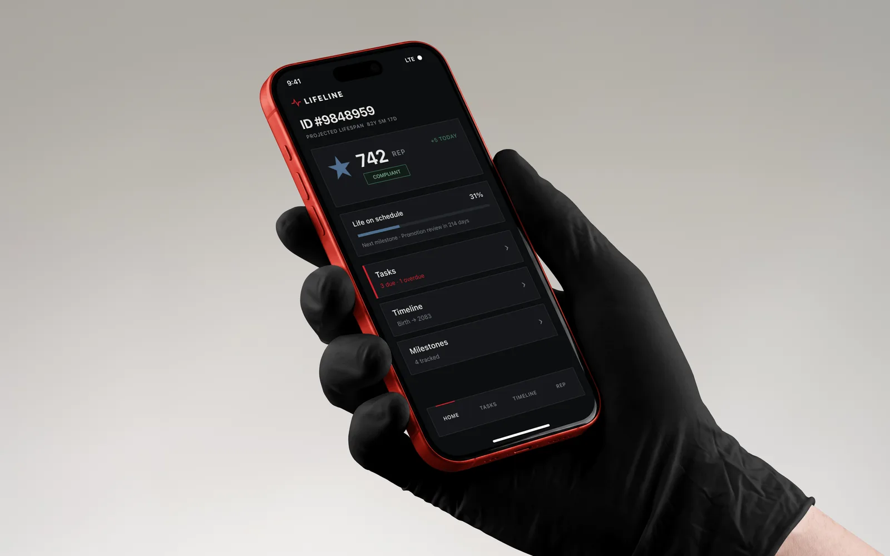

A plotted life
Every action is tracked, predicted and assigned a value, then laid out as a timeline to follow.
CASE STUDY / SPECULATIVE DESIGN
Your life, scheduled.
An app from a near future where every action is tracked, predicted and scored. Lifeline maps a whole life, from birth to death, and enforces it.
SEE THE SYSTEM001 / CONCEPT
A speculative design project. Lifeline plans a whole life, from school to retirement to a projected death date, and penalizes the user for falling behind. Every mechanic is borrowed from patterns phones already use, pushed one step further.

Every action is tracked, predicted and assigned a value, then laid out as a timeline to follow.
Missing a task reshapes the timeline and removes privileges. Completing tasks earns status, access and comfort.
Streaks, credit scores, fitness rings, screen-time reports and delivery-driver tracking already score small behaviors. Lifeline connects them to one timeline.
WHY IT MATTERS
Streaks, scores, rings and tracking already reward small behaviors in today’s apps. Connected into one system, the same patterns could stop helping people manage their lives and start managing people instead.
DESIGN QUESTION
What would it feel like if one app scheduled, scored and enforced an entire life?
002 / SPECULATIVE SCENARIO
“You are 12 minutes late for your career milestone check-in.”
“Reduced advancement potential.”
Swiping to continue feels less like a choice and more like submission.
003 / SUBJECTS
Lifeline has subjects, not users. #9848959 is the one being scheduled. Rebellion feels too risky, and the promise of comfort for loyalty doesn’t quite land either, so what’s left is resignation.
ALSO ON THE SYSTEM
“One bad month and the date moves again.”
“When someone on my team leaves the zone, my score drops too.”
004 / JOURNEY
005 / THE SYSTEM
Each screen turns one part of a life into something to check, score or penalize.
006 / PROCESS
The project began as six low-fidelity wireframes: a home screen, a menu, milestones, a timeline, tasks and a reputation gauge. Reworking them added the moments from the concept (the alert, the biometric check-in, the green zone and the mood check-in), then the final visual layer.
The original menu had a REP star, a progress bar and three buttons. The rework turns them into a score, a schedule percentage and tiles that flag what is overdue.
The original Birth-to-Death arrow, with College and Marriage struck through, became a timeline that shows where you are now and what the last missed check-in cost.
The original gauge used smiley faces. The final drops them for a cold red-to-green scale and a running ledger of gains and penalties.
007 / VISUAL LANGUAGE
Lifeline looks like enterprise software: cold, sharp and official. Nothing is soft, and red is reserved for consequences.
Two-pixel radii and square markers. Even the "you are here" dot is a square.
Tracked uppercase labels read like an HR system: "Cancel is not available."
A hard red bar marks every penalty, overdue task and warning.
008 / REFLECTION
Fear drives compliance, and the brief relief after each completed task keeps people going. The app runs on anxiety.
Urgent alerts, penalty structures and biometric checks do the governing. The phone stops being personal and becomes a tool for watching you.
Small moments of delay are magnified into punishments that reshape a whole life. Every pattern here exists, in softer form, in apps people use today.